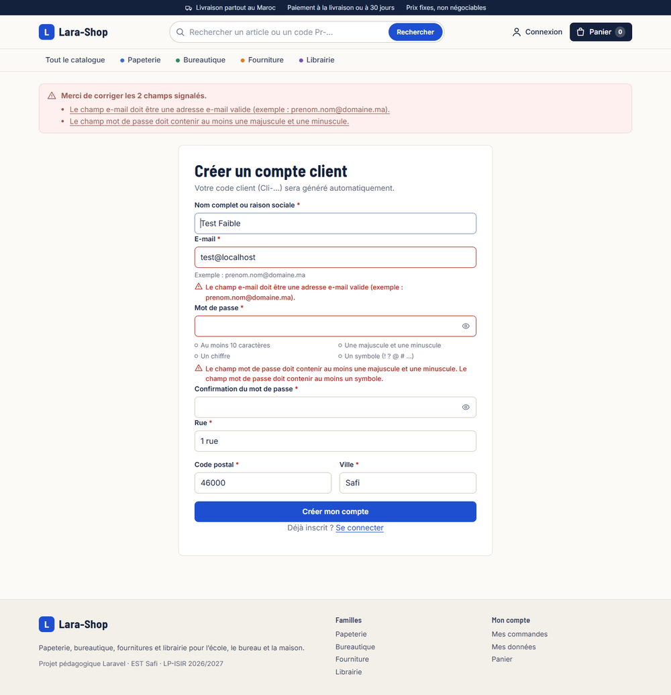
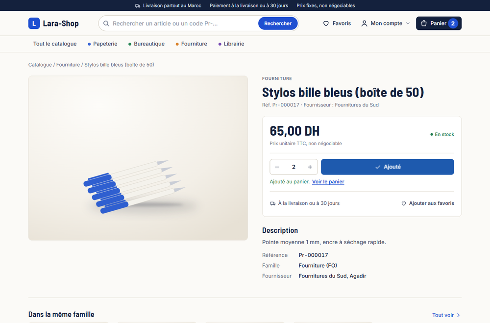
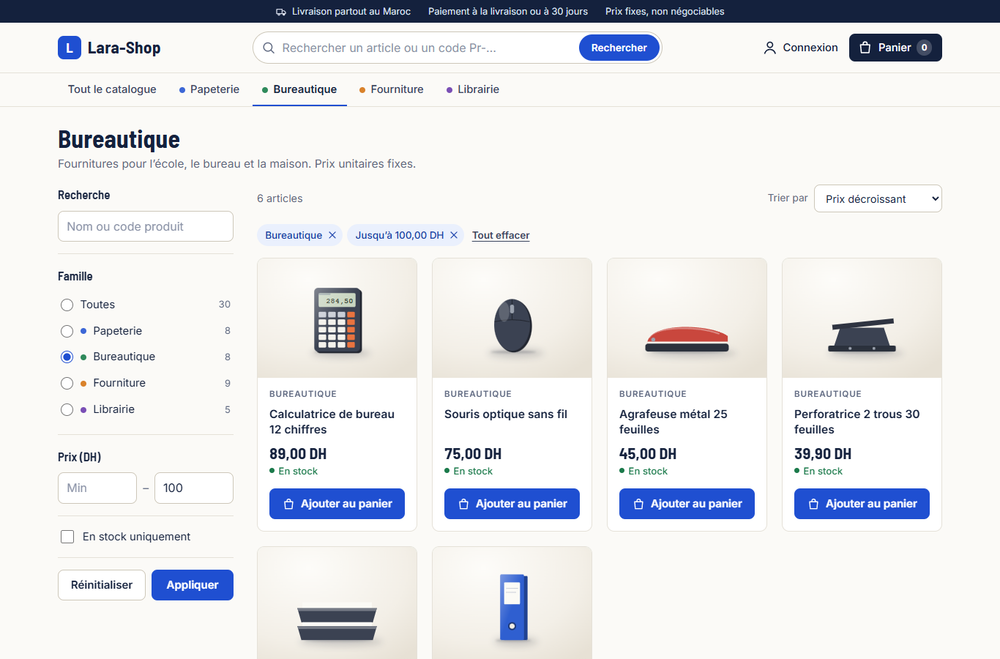
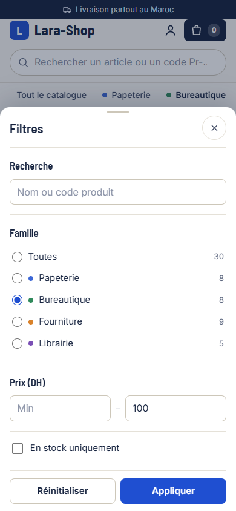
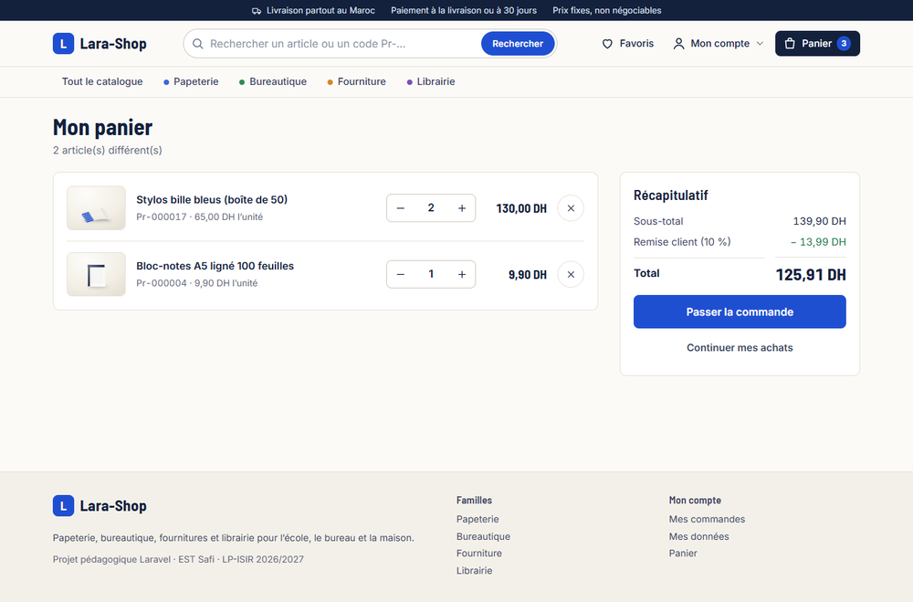
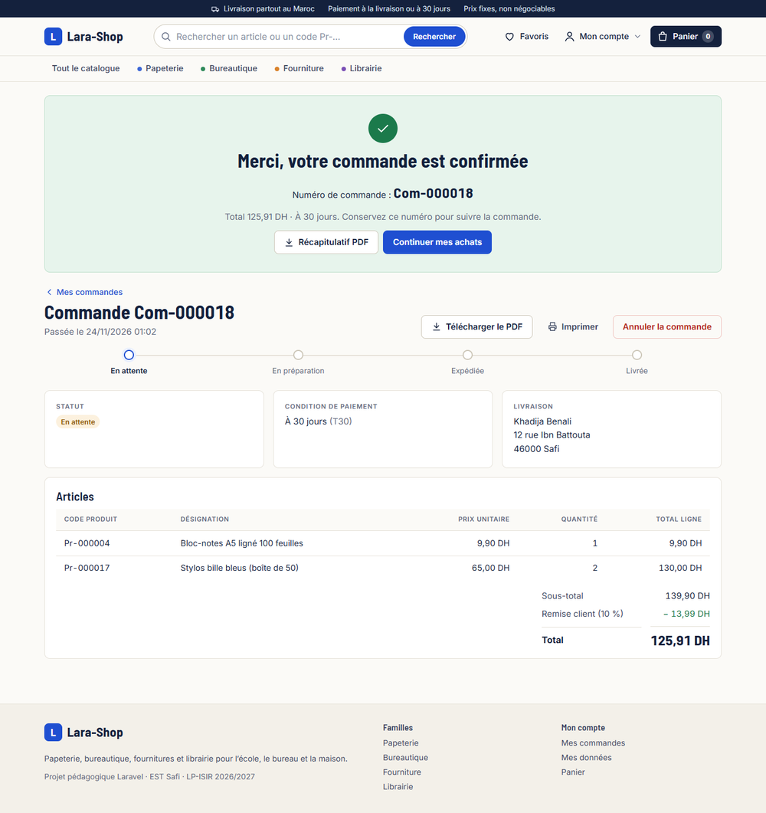
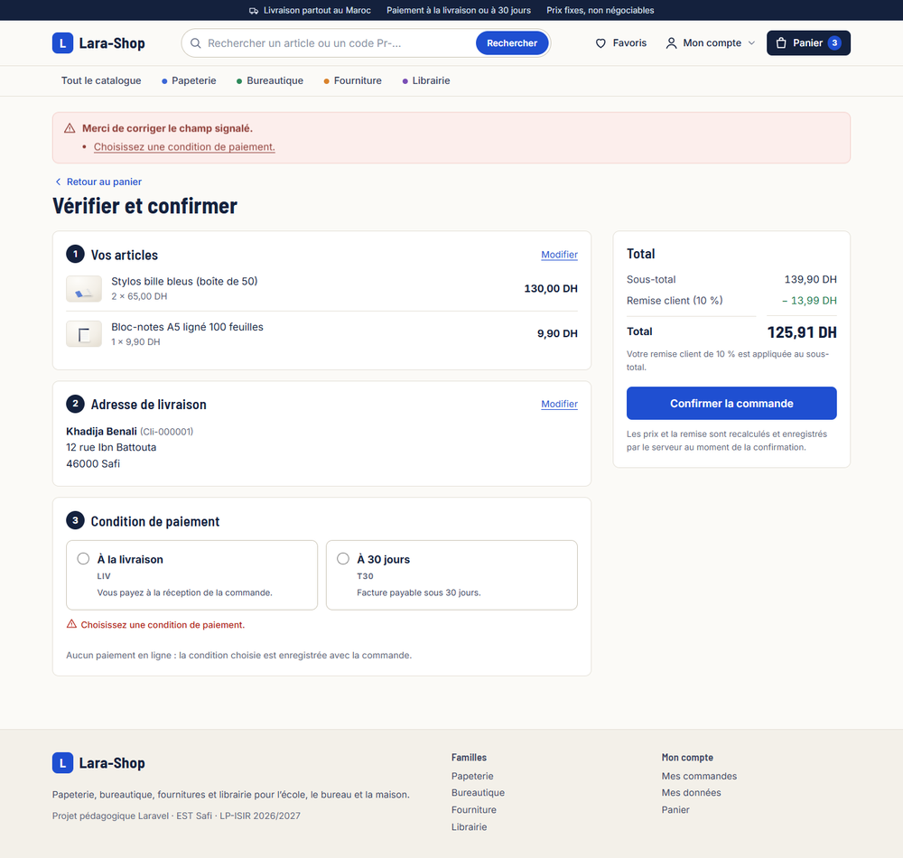
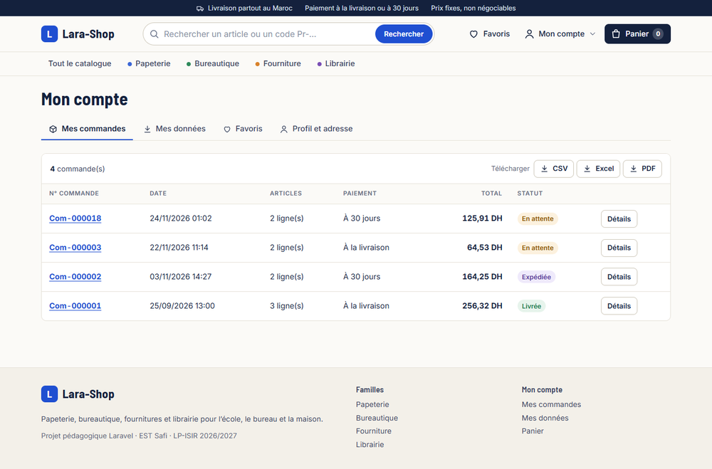
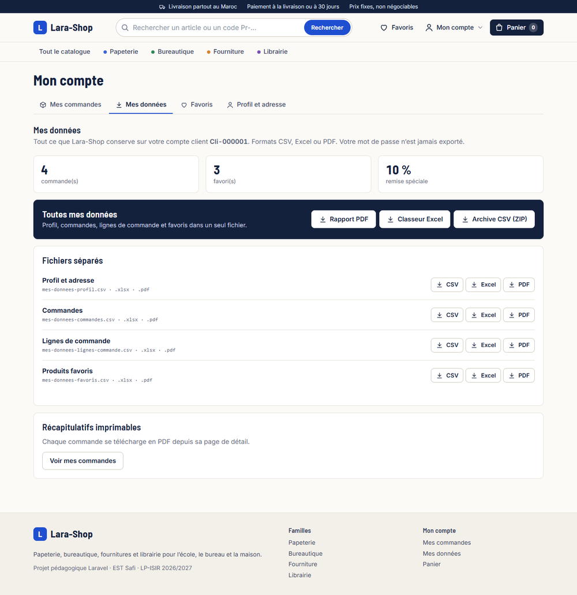

Partie 2
La boutique, fonctionnalité par fonctionnalité
Chaque chapitre suit le même plan en six étapes. Les noms de routes (cart.store…) se retrouvent avec
php artisan route:list ; le tableau des routes les rassemble.
6. Inscription, connexion et profil
Point de départ
Dans l’en-tête, le lien Connexion mène à /connexion ; sous le formulaire, « Créer un compte » mène à
/inscription. Une fois connecté, le menu Mon compte donne accès à « Profil et adresse »
(/profil) et à « Déconnexion ».
Fichiers concernés
- Routes
- GET/POST
/inscription(register) · GET/POST/connexion(login, limité à 10 essais par minute) · POST/deconnexion(logout) · GET/profil(profile.edit) · PUT/profil(profile.update) · PUT/profil/mot-de-passe(profile.password) - Contrôleurs
RegisterController@store,LoginController@store,LoginController@destroy,ProfileController@update,ProfileController@updatePassword- Modèles
app/Models/User.php,app/Models/Client.php- Vues
resources/views/auth/register.blade.php,resources/views/auth/login.blade.php,resources/views/profile/edit.blade.php, composantsresources/views/components/input.blade.phpetresources/views/components/password-field.blade.php- Validation
User::emailRules(),Password::defaults()défini dansapp/Providers/AppServiceProvider.php, messages danslang/fr/validation.php- Accès
- middleware
guest(inscription, connexion),auth+customer(profil)
Ce qui se passe
Inscription. Le contrôleur met l’e-mail en minuscules, valide le formulaire, puis crée deux lignes dans une seule transaction : le client du PDF (type « Particulier » et remise 0 % par défaut) et le compte de connexion qui pointe vers lui.
$user = DB::transaction(function () use ($data) {
$client = Client::create([
'name' => $data['name'],
'street' => $data['street'],
'postal_code' => $data['postal_code'],
'city' => $data['city'],
'type' => Client::DEFAULT_TYPE, // admin can change it later
'special_discount' => 0, // admin can change it later
]);
$user = new User([
'name' => $data['name'],
'email' => $data['email'],
'password' => $data['password'], // hashed automatically (cast "hashed")
]);
$user->role = User::ROLE_CUSTOMER;
$user->client_id = $client->id;
$user->save();
return $user;
});
Auth::login($user);
$request->session()->regenerate();Le rôle et le client sont affectés à la main : ils ne figurent pas dans $fillable du modèle
app/Models/User.php. Un utilisateur malin qui ajouterait un champ role=admin au formulaire
n’obtiendrait donc rien (un test le vérifie dans tests/Feature/AuthTest.php).
Règles de l’e-mail et du mot de passe. Elles sont écrites une seule fois et réutilisées par l’inscription et par la page profil :
Password::defaults(function () {
$rule = Password::min(config('shop.password_min_length'))->letters()->mixedCase()->numbers()->symbols();
return config('shop.password_leak_check') && ! app()->runningUnitTests() ? $rule->uncompromised() : $rule;
});public static function emailRules(?int $ignoreUserId = null): array
{
$format = 'email:rfc,strict,filter'.(config('shop.email_dns_check') ? ',dns' : '');
return ['required', 'string', 'max:190', $format, Rule::unique('users', 'email')->ignore($ignoreUserId)];
}Le mot de passe doit donc contenir au moins 10 caractères, une majuscule, une minuscule, un chiffre et un symbole ; la liste des
règles se coche en direct grâce à un petit script (public/js/app.js, section 5c). uncompromised()
refuse aussi un mot de passe présent dans une fuite publique (service haveibeenpwned.com, ignoré sans connexion Internet).
Connexion. Auth::attempt() cherche le compte par e-mail et compare le mot de passe saisi avec le
hachage enregistré (le mot de passe en clair n’est jamais stocké) :
// Auth::attempt checks the email and compares the password with the stored hash.
if (! Auth::attempt($credentials, $request->boolean('remember'))) {
throw ValidationException::withMessages([
'email' => 'Ces identifiants ne correspondent à aucun compte.',
]);
}
$request->session()->regenerate(); // protection against session fixationEnsuite, redirect()->intended() renvoie l’utilisateur vers la page qu’il voulait voir avant d’être arrêté par le
middleware auth (par exemple /commande) ; à défaut, un administrateur va sur /admin et un client
sur le catalogue. La déconnexion (LoginController@destroy) invalide la session et régénère le jeton CSRF.
Profil. ProfileController@update enregistre nom, e-mail et adresse. Le type de client et
la remise sont affichés mais jamais lus dans le formulaire : seul l’administrateur peut les changer.
Résultat
Après l’inscription, le visiteur est connecté et voit « Bienvenue … ! Votre compte client Cli-000009 est créé. » Après la connexion, « Bonjour … ! ». Sur le profil, « Votre profil a été mis à jour. ».
Ce qui peut mal tourner
- Champ manquant, e-mail invalide (
nadia@localhost, sans point dans le domaine) ou déjà utilisé, mot de passe trop faible : retour au formulaire, message sous le champ concerné et résumé cliquable en haut de page. - Mauvais identifiants : « Ces identifiants ne correspondent à aucun compte. »
- Plus de 10 tentatives de connexion en une minute : page 429 « Trop de tentatives » (middleware
throttle:10,1). - Un visiteur qui ouvre
/profilest envoyé sur/connexion; un administrateur reçoit une page 403 « Cette page est réservée aux comptes clients. ».

test@localhost et mot de passe cahier2026 : les erreurs s’affichent à côté des champs.Inscrivez-vous avec le mot de passe cahier2026 : le message demande une
majuscule et une minuscule ainsi qu’un symbole. Recommencez avec Cahier#Bleu2026 : le compte est créé.
Notions utilisées
- Middleware : filtre placé devant une route.
guestréserve l’inscription aux visiteurs,authexige d’être connecté,customer(fichierapp/Http/Middleware/EnsureUserIsCustomer.php) exige un compte client. - Hachage : transformation à sens unique du mot de passe. Le cast
'password' => 'hashed'du modèleUserle fait automatiquement. - Affectation de masse et
$fillable: liste des colonnes qu’on peut remplir d’un coup aveccreate([...]); les autres sont protégées. - Transaction : un groupe d’écritures « tout ou rien » (
DB::transaction), voir le chapitre 11. - Session : mémoire côté serveur liée au navigateur par un cookie ;
regenerate()change son identifiant après connexion.
7. Le catalogue et la fiche produit
Point de départ
La page d’accueil / est le catalogue. La barre des familles (Tout le catalogue, Papeterie…) et le logo y mènent
aussi. Cliquer sur une carte ouvre la fiche /produits/Pr-0000xx.
Fichiers concernés
- Routes
- GET
/(catalog.index) · GET/produits/{product:code}(catalog.show) - Contrôleur
CatalogController@index,CatalogController@show- Modèle
app/Models/Product.php: portéesavailable(),filter(),sortBy(), méthodesisLowStock(),isPurchasable(),imageUrl()- Vues
resources/views/catalog/index.blade.php,resources/views/catalog/_card.blade.php,resources/views/catalog/show.blade.php, composantsresources/views/components/product-image.blade.php,resources/views/components/stock-badge.blade.php,resources/views/components/add-to-cart.blade.php
Ce qui se passe
CatalogController@indexlit les filtres de l’adresse (chapitre 8).- Il demande les produits disponibles : non archivés et visibles en boutique. La portée
available()résume cette règle une fois pour toutes. with('supplier')charge les fournisseurs en une requête (au lieu d’une par carte) ;paginate()découpe en pages de 12 (config('shop.per_page')).- Il récupère aussi les favoris du client connecté (pour remplir les cœurs) et le nombre d’articles par famille.
- La vue affiche le bandeau d’accueil uniquement si aucun filtre n’est actif et qu’on est en page 1, puis une carte
par produit grâce à
@include('catalog._card').
/** Products customers can see and buy: not archived AND listed in the shop. */
public function scopeAvailable(Builder $query): Builder
{
return $query->active()->where('is_listed', true);
}Chaque carte montre l’image (ou une tuile colorée de la famille si l’image manque), le prix formaté par money()
(app/helpers.php), et un badge de stock :
@if ($product->stock === 0)
<span class="stock stock-out">Rupture de stock</span>
@elseif ($product->isLowStock())
<span class="stock stock-low">Plus que {{ $product->stock }} en stock</span>
@else
<span class="stock stock-ok">En stock</span>
@endifLa fiche produit a été détaillée au chapitre 5 : elle regroupe prix, stock, quantité et bouton « Ajouter au panier » dans un même encadré, puis quatre produits de la même famille.
Résultat

/produits/Pr-000017 juste après un ajout au panier.Ce qui peut mal tourner
- Code inexistant, produit archivé ou masqué : page 404 pour les clients. Un administrateur voit la fiche avec un bandeau « Aperçu administrateur : ce produit est masqué… ».
- Produit en rupture : le bouton devient « Indisponible » et il est désactivé.
- Image absente ou introuvable : l’attribut
onerror="this.remove()"retire l’image et laisse voir la tuile de la famille.
Ouvrez /produits/Pr-000008 (chemises cartonnées, stock 0) : badge
« Rupture de stock » et bouton désactivé.
Notions utilisées
- Portée de requête (scope) : une méthode
scopeXxxdu modèle devientProduct::xxx()et ajoute des conditions réutilisables. - Chargement anticipé (
with()) : évite le problème « N+1 » (une requête par carte). - Composant Blade : un morceau de vue réutilisable appelé comme une balise,
<x-stock-badge :product="$product" />;@propsdéclare ses paramètres. compact(): fonction PHP qui transforme des variables en tableau['products' => $products, …]pour la vue.
8. Recherche, filtres, tri et pagination
Point de départ
Le champ Rechercher de l’en-tête, le panneau Filtres (à gauche sur ordinateur, panneau qui monte du bas sur téléphone avec le bouton « Filtres »), la liste Trier par et les liens de pagination. Chaque filtre actif apparaît en « pastille » avec une croix pour le retirer.
Fichiers concernés
- Route
- GET
/(catalog.index) avec des paramètres :?q=cahier&family=PA&min_price=5&max_price=50&in_stock=1&sort=price_asc&page=2 - Code
CatalogController@index,Product::scopeFilter(),Product::scopeSortBy(), constanteProduct::SORTS- Vues
resources/views/catalog/index.blade.php(formulaire, pastilles),resources/views/partials/pagination.blade.php- Script
public/js/app.js: panneau mobile (section 2), tri envoyé dès le changement (section 3,data-auto-submit)
Ce qui se passe
Le formulaire de recherche utilise la méthode GET : les critères sont écrits dans l’adresse. On peut donc copier l’adresse, revenir en arrière ou paginer sans perdre les filtres. Le contrôleur ne fait jamais confiance à ces valeurs : il garde seulement les familles et tris connus, convertit les prix en nombres et ignore le reste.
$filters = array_filter([
'q' => mb_substr($get('q'), 0, 100),
'family' => array_key_exists($get('family'), Product::FAMILIES) ? $get('family') : null,
'min_price' => is_numeric($get('min_price')) ? max(0, (float) $get('min_price')) : null,
'max_price' => is_numeric($get('max_price')) ? max(0, (float) $get('max_price')) : null,
'sort' => array_key_exists($get('sort'), Product::SORTS) ? $get('sort') : null,
'in_stock' => $get('in_stock') === '1' ? '1' : null,
], fn ($value) => $value !== null && $value !== '');Le modèle applique ensuite chaque filtre seulement s’il est présent, grâce à when(). La recherche cherche le texte dans la
désignation ou dans le code produit (LIKE '%cahier%') :
public function scopeFilter(Builder $query, array $filters): Builder
{
return $query
->when($filters['q'] ?? null, function ($q, $search) {
$q->where(fn ($w) => $w->where('designation', 'like', "%{$search}%")
->orWhere('code', 'like', "%{$search}%"));
})
->when($filters['family'] ?? null, fn ($q, $family) => $q->where('family', $family))
->when(is_numeric($filters['min_price'] ?? null), fn ($q) => $q->where('unit_price', '>=', $filters['min_price']))
->when(is_numeric($filters['max_price'] ?? null), fn ($q) => $q->where('unit_price', '<=', $filters['max_price']))Enfin, paginate(12)->withQueryString() ajoute les filtres aux liens « Suivant / Précédent ». Le HTML de la pagination
vient de resources/views/partials/pagination.blade.php, déclaré par Paginator::defaultView()
dans app/Providers/AppServiceProvider.php. Les pastilles utilisent request()->fullUrlWithoutQuery([$key, 'page'])
pour fabriquer l’adresse « sans ce filtre ».
Résultat

/?family=BU&max_price=100&sort=price_desc
Ce qui peut mal tourner
- Valeurs fantaisistes (
/?family=XX&sort=hack&min_price=abc) : elles sont ignorées, la page s’affiche normalement (testtest_invalid_filters_are_ignoreddanstests/Feature/CatalogTest.php). - Aucun résultat : message « Aucun article trouvé » et lien « Voir tout le catalogue ».
- Les anciennes adresses
/catalogue?...redirigent vers/en gardant les filtres.
Tapez Pr-000012 dans la recherche : seule la calculatrice s’affiche, car
la recherche porte aussi sur le code.
Notions utilisées
- GET ou POST : GET lit (recherche, liens partageables), POST/PUT/PATCH/DELETE modifient.
- Chaîne de requête (query string) : la partie après
?; lue avec$request->query('q'). - Pagination :
paginate()renvoie une page de résultats et les informations pour les liens. - Amélioration progressive : sans JavaScript, le formulaire fonctionne avec son bouton ; avec JavaScript, le tri s’applique dès le choix.
9. Les favoris
Point de départ
Le cœur en haut à droite d’une carte, ou le bouton « Ajouter aux favoris » de la fiche produit (clients connectés). La page
/favoris liste les produits gardés.
Fichiers concernés
- Routes
- POST
/favoris/{product}(favorites.toggle) · GET/favoris(favorites.index) - Contrôleur
FavoriteController@toggle,FavoriteController@index- Base
- table pivot
favorites(database/migrations/2026_11_23_000007_create_favorites_table.php), relationUser::favoriteProducts() - Vues
resources/views/components/favorite-button.blade.php,resources/views/favorites/index.blade.php
Ce qui se passe
Le bouton est un vrai formulaire POST (avec @csrf). Le contrôleur appelle toggle() sur la relation
plusieurs-à-plusieurs : la ligne pivot est ajoutée si elle manque, retirée si elle existe.
$result = $request->user()->favoriteProducts()->toggle($product->id);
$isFavorite = $result['attached'] !== [];Si la demande vient du script (fetch, en-tête Accept: application/json), la réponse est du JSON
{"message": …, "favorite": true} et la page ne se recharge pas : le cœur se remplit tout de suite et un lecteur d’écran
annonce le message. Sans JavaScript, le contrôleur redirige vers la page précédente avec un message.
Résultat
Le cœur change d’état (aria-pressed="true") et le produit apparaît sur /favoris, présenté avec les mêmes cartes que le catalogue.
Ce qui peut mal tourner
- Visiteur non connecté : pas de cœur sur les cartes ; la route renvoie vers
/connexion. - Administrateur : 403 (les favoris sont réservés aux clients).
- Si le serveur répond par une erreur, le script remet le cœur dans son état précédent.
- Un produit masqué ou archivé reste dans la table mais n’apparaît plus sur
/favoris(portéeavailable()).
Notions utilisées
- Relation plusieurs-à-plusieurs :
belongsToMany(Product::class, 'favorites'); méthodesattach,detach,toggle. - Index unique
(user_id, product_id): un produit ne peut être deux fois favori du même compte. $request->expectsJson(): répondre en JSON au script, en HTML au navigateur.
10. Le panier
Point de départ
Le bouton Ajouter au panier d’une carte ou de la fiche produit (avec le sélecteur de quantité −/+), puis le bouton Panier de l’en-tête qui affiche le nombre d’articles.
Fichiers concernés
- Routes
- GET
/panier(cart.index) · POST/panier(cart.store) · PATCH/panier/{product}(cart.update) · DELETE/panier/{product}(cart.destroy) - Contrôleur
CartController@store,CartController@update,CartController@destroy,CartController@index- Services
app/Services/Cart.php(le panier en session),app/Services/PriceCalculator.php(les montants)- Vues
resources/views/cart/index.blade.php,resources/views/components/add-to-cart.blade.php,resources/views/partials/totals.blade.php
Ce qui se passe
Le panier vit dans la session : un visiteur peut le remplir avant de se connecter, et il est conservé à la connexion. On n’y range que des identifiants et des quantités, jamais de prix :
public function set(int $productId, int $quantity): void
{
$items = $this->items();
if ($quantity <= 0) {
unset($items[$productId]);
} else {
$items[$productId] = $quantity;
}
session([self::KEY => $items]);
}Ajouter un article (CartController@store) :
$data = $request->validate([
'product_id' => ['required', 'integer', 'exists:products,id'],
'quantity' => ['nullable', 'integer', 'min:1', 'max:'.config('shop.max_quantity')],
]);
$product = Product::available()->findOrFail($data['product_id']);
$newQuantity = $cart->quantityOf($product->id) + ($data['quantity'] ?? 1);
if ($newQuantity > $product->stock) {
$message = "Stock insuffisant : il reste {$product->stock} exemplaire(s) de « {$product->designation} ».";Le paramètre Cart $cart de la méthode est rempli par Laravel lui-même (injection de dépendance).
Quand le bouton est cliqué, le script de public/js/app.js envoie le formulaire avec fetch :
le contrôleur répond en JSON {"message": …, "cartCount": 3}, le bouton affiche « Ajouté », le compteur de l’en-tête se met
à jour et le message apparaît juste sous le bouton. Sans JavaScript, c’est une redirection classique avec message.
La page /panier appelle Cart::summary(), qui relit chaque produit et son prix actuel en base,
écarte les produits devenus indisponibles, signale ceux dont le stock est insuffisant, puis calcule sous-total, remise du client connecté
et total avec PriceCalculator::totals(). Modifier une quantité envoie PATCH /panier/{product} ; retirer une ligne
envoie DELETE. Les formulaires HTML ne connaissent que GET et POST, d’où la directive @method :
<form action="{{ route('cart.update', $product) }}" method="post" class="qty-form">
@csrf
@method('PATCH')Résultat

Ce qui peut mal tourner
- Quantité supérieure au stock : « Stock insuffisant : il reste 2 exemplaire(s) de « Étiqueteuse portable ». » (réponse 422 pour le script).
- Produit masqué ou archivé :
findOrFailrépond 404 ; s’il disparaît après l’ajout, il est retiré du résumé. - Le stock baisse pendant que l’article attend dans le panier : la ligne est signalée en rouge et le bouton « Passer la commande » est désactivé.
- Visiteur : bouton « Se connecter pour commander » ; administrateur : « Les comptes administrateurs ne peuvent pas commander ».
Sur /produits/Pr-000015 (étiqueteuse, stock 2), choisissez 3 avec le bouton + :
le message d’erreur s’affiche sous le bouton, le panier ne change pas.
Notions utilisées
- Session et message flash :
session([...])garde une valeur entre les pages ;->with('success', …)garde un message pour la page suivante seulement. - Usurpation de méthode (method spoofing) :
@method('PATCH')ajoute un champ caché_method. - Jeton CSRF :
@csrfajoute un champ caché que Laravel compare à la session ; sans lui, réponse 419 « Session expirée ». - Ne jamais faire confiance au navigateur : le prix est toujours relu en base (règle 5 du PDF).
11. Passer commande
Point de départ
Dans le panier, le bouton Passer la commande ouvre /commande : les articles, l’adresse, le choix
« À la livraison » (LIV) ou « À 30 jours » (T30), et le bouton Confirmer la commande.
Fichiers concernés
- Routes
- GET
/commande(checkout.create) · POST/commande(checkout.store), réservées aux clients - Contrôleur
CheckoutController@create,CheckoutController@store- Service
OrderService@placeOrder,app/Services/PriceCalculator.php, exceptionapp/Exceptions/CheckoutException.php- Modèles
app/Models/Order.php,app/Models/OrderLine.php,app/Models/Product.php- Vues
resources/views/checkout/create.blade.php, puisresources/views/orders/show.blade.php
Ce qui se passe
CheckoutController@create renvoie au panier s’il est vide, sinon affiche le récapitulatif et place dans le
formulaire un jeton unique (Str::uuid()) dans le champ caché checkout_token. À l’envoi,
CheckoutController@store valide les deux champs puis confie tout le travail au service :
$data = $request->validate([
'payment_terms' => ['required', Rule::in(array_keys(Order::PAYMENT_TERMS))],
'checkout_token' => ['required', 'uuid'],
], [
'payment_terms.required' => 'Choisissez une condition de paiement.',
]);OrderService@placeOrder travaille dans une transaction : si une étape échoue, rien n’est
enregistré.
- Double envoi ? Une commande existe déjà avec ce jeton : on la renvoie, sans en créer une seconde.
- Relire les produits en base (
lockForUpdate()bloque les autres commandes simultanées sous MySQL). - Vérifier chaque ligne : produit encore disponible, quantité ≤ stock. Sinon,
CheckoutExceptionavec la liste des problèmes. - Calculer les montants côté serveur avec la remise actuelle du client (
$client->fresh()). - Créer la commande (son numéro Com-0000xx est généré) puis ses lignes, avec les prix figés.
- Retirer le stock avec une condition vérifiée par la base elle-même :
where('stock', '>=', quantité).
foreach ($cartItems as $productId => $quantity) {
$product = $products->get($productId);
if (! $product || ! $product->isPurchasable()) {
$errors[] = 'Un produit de votre panier n’est plus disponible.';
} elseif ($quantity > $product->stock) {
$errors[] = "Stock insuffisant pour « {$product->designation} » (disponible : {$product->stock}).";
} else {
$lines[] = [
'product_id' => $product->id,
'quantity' => $quantity,
'unit_price' => $product->unit_price, // price frozen now
];
}
}// "where stock >= quantity" = a final safety check done by the database itself.
$updated = Product::whereKey($line['product_id'])
->where('stock', '>=', $line['quantity'])
->decrement('stock', $line['quantity']);
if ($updated === 0) {
throw new CheckoutException(['Le stock a changé pendant la commande. Veuillez réessayer.']);
}Enfin le contrôleur vide le panier et redirige vers la page de la commande avec la valeur flash just_ordered, qui fait
apparaître le grand encadré de confirmation.
Exemple complet : deux articles et une remise de 10 %
Connectée avec client@larashop.test (remise 10 %), Khadija ajoute 3 ramettes A4 (Pr-000001, 49,90 DH) et
2 boîtes de stylos (Pr-000017, 65,00 DH), choisit « À la livraison » et confirme.
| Étape | Calcul (en centimes, sans virgule flottante) | Résultat |
|---|---|---|
| Ligne 1 | 4 990 × 3 = 14 970 | 149,70 DH |
| Ligne 2 | 6 500 × 2 = 13 000 | 130,00 DH |
| Sous-total | 14 970 + 13 000 = 27 970 | 279,70 DH |
| Remise 10 % | (27 970 × 10 + 50) ÷ 100, partie entière = 2 797 | 27,97 DH |
| Total | 27 970 − 2 797 = 25 173 | 251,73 DH |
| Stock | ramettes 120 → 117 ; stylos 70 → 68 | commande Com-000018 « En attente » |
/** Discount in centimes, rounded half up. */
public static function discount(int $subtotalCents, int $rate): int
{
return intdiv($subtotalCents * $rate + 50, 100);
}Les montants sont stockés en DECIMAL(10,2) et calculés en centimes entiers : on évite ainsi les erreurs
des nombres à virgule (0,1 + 0,2 ≠ 0,3 en informatique). La remise est arrondie au centime le plus proche, la moitié vers le haut.
Prix historiques
La commande enregistre unit_price sur chaque ligne et discount_rate, subtotal,
discount_amount, total sur la commande. Si l’administrateur change ensuite le prix ou la remise, les anciennes
commandes ne bougent pas. Les données de démonstration le montrent : dans database/seeders/OrderSeeder.php,
la commande Com-000001 contient des ramettes à 45,00 DH alors que le catalogue affiche 49,90 DH.
Envois répétés (double clic)
- Dans le navigateur, le script désactive le bouton dès le premier clic et affiche « Commande en cours… ».
- Côté serveur, le même jeton renvoie la commande déjà créée (étape 1 ci-dessus).
- Si deux envois arrivent exactement en même temps, l’index unique de
orders.checkout_tokenfait échouer le second ; le service attrape l’erreurUniqueConstraintViolationExceptionet renvoie la commande gagnante.
Résultat

Ce qui peut mal tourner
- Aucune condition de paiement choisie : « Choisissez une condition de paiement. » sous les deux choix (aucune n’est cochée par défaut).
- Stock insuffisant ou produit retiré entre-temps : retour au panier avec le message ; la transaction a tout annulé, le stock est intact.
- Panier vide :
/commanderedirige vers le panier. - Visiteur : redirection vers
/connexion, puis retour automatique sur/commandeaprès connexion.

Mettez 2 étiqueteuses (stock 2) dans le panier. Dans un autre onglet connecté en administrateur, passez le stock à 1. Confirmez la commande : « Stock insuffisant pour « Étiqueteuse portable » (disponible : 1). », et aucune commande n’est créée.
Notions utilisées
- Transaction :
DB::transaction(function () { … })valide tout à la fin, ou annule tout si une exception est lancée. - Exception :
CheckoutExceptioninterrompt le traitement ; le contrôleur l’attrape avectry / catch. - Service : une classe qui contient une logique métier réutilisable, hors du contrôleur.
- Validation
Rule::in: seule une valeur de la listeOrder::PAYMENT_TERMSest acceptée.
12. Mes commandes : historique, statuts, annulation et PDF
Point de départ
Menu Mon compte → Mes commandes ou l’onglet du même nom. Sur une commande : Télécharger le PDF, Imprimer, et Annuler la commande tant qu’elle est en attente.
Fichiers concernés
- Routes
- GET
/mes-commandes(orders.index) · GET/mes-commandes/{order:number}(orders.show) · GET…/imprimer(orders.print) · GET…/pdf(orders.pdf) · POST…/annuler(orders.cancel) - Contrôleur
OrderController@index,OrderController@show,OrderController@print,OrderController@pdf,OrderController@cancel- Autorisation
app/Policies/OrderPolicy.php(méthodesviewetcancel)- Service
OrderService@changeStatus,app/Support/PdfExport.php- Vues
resources/views/orders/index.blade.php,resources/views/orders/show.blade.php,resources/views/orders/_tracking.blade.php,resources/views/orders/_lines.blade.php,resources/views/orders/print.blade.php,resources/views/pdf/order.blade.php
Ce qui se passe
La liste ne lit que les commandes du client connecté : Order::where('client_id', $request->user()->client_id), 10 par page.
L’adresse d’une commande utilise son numéro ({order:number}), mais le numéro seul ne suffit pas pour la voir :
le contrôleur demande l’autorisation à la policy.
/** Admins see every order; a customer only sees the orders of their client. */
public function view(User $user, Order $order): bool
{
return $user->isAdmin() || ($user->client_id !== null && $user->client_id === $order->client_id);
}public function show(Order $order)
{
// OrderPolicy::view -> 403 if this order belongs to another client.
Gate::authorize('view', $order);Les statuts et leurs enchaînements possibles sont des constantes du modèle app/Models/Order.php :
public const NEXT_STATUSES = [
'pending' => ['preparing', 'cancelled'],
'preparing' => ['shipped', 'cancelled'],
'shipped' => ['delivered'],
'delivered' => [],
'cancelled' => [],
];Le suivi (resources/views/orders/_tracking.blade.php) colore les étapes En attente → En préparation →
Expédiée → Livrée. Le client peut annuler une commande en attente (OrderPolicy::cancel) : le service passe le
statut à « Annulée » et remet les quantités en stock, une seule fois (voir le chapitre 18).
Le PDF est fabriqué par dompdf à partir de resources/views/pdf/order.blade.php ; la page « Imprimer »
est une page HTML que le navigateur peut aussi enregistrer en PDF.
Résultat

/mes-commandes, avec les boutons de téléchargement CSV, Excel et PDF.Ce qui peut mal tourner
- Ouvrir la commande d’un autre client en tapant son adresse : 403 « Accès refusé ».
- Annuler une commande déjà en préparation : le bouton n’apparaît pas et l’URL répond 403.
- Aucune commande : « Aucune commande pour le moment » et un lien vers le catalogue.
Connecté avec client@larashop.test, ouvrez
/mes-commandes/Com-000004 (commande de Youssef) : la page 403 s’affiche. Le test
test_customer_cannot_open_another_customers_order_by_url de tests/Feature/AuthorizationTest.php
vérifie la même chose.
Notions utilisées
- Policy : classe qui répond à « cet utilisateur a-t-il le droit de … sur cet objet ? ». Laravel associe automatiquement
OrderPolicyau modèleOrder. Gate::authorize(): appelle la policy et répond 403 si la réponse est non ; dans les vues,@can('cancel', $order)affiche le bouton seulement si c’est permis.- Liaison de modèle par une autre colonne :
{order:number}.
13. Mes données : les téléchargements du client
Point de départ
Menu Mon compte → Mes données (/mes-donnees) : un encadré « Toutes mes données » (Rapport PDF, Classeur
Excel, Archive CSV) et, pour chaque jeu de données, trois boutons CSV · Excel · PDF.
Fichiers concernés
- Routes
- GET
/mes-donnees(my-data.index) ·/mes-donnees/{dataset}.{format}(my-data.download) ·/mes-donnees/archive.zip(my-data.bundle) ·/mes-donnees/classeur.xlsx(my-data.workbook) ·/mes-donnees/rapport.pdf(my-data.report) - Contrôleur
AccountDataController@download,AccountDataController@bundle,AccountDataController@workbook,AccountDataController@report- Exports
app/Support/ExportDatasets.php(colonnes),app/Support/CsvExport.php,app/Support/XlsxExport.php,app/Support/PdfExport.php- Vues
resources/views/my-data/index.blade.php,resources/views/components/export-formats.blade.php,resources/views/pdf/report.blade.php
Ce qui se passe
Quatre jeux de données sont proposés : profil, commandes, lignes-commande, favoris.
La propriété des données est garantie par les requêtes elles-mêmes : chacune est limitée au client ou au compte connecté.
return match ($key) {
'profil' => ExportDatasets::profile($user),
'favoris' => ExportDatasets::favorites(ExportDatasets::favoritesQuery($user->id)),
'commandes' => ExportDatasets::orders(Order::where('client_id', $user->client_id)),
'lignes-commande' => ExportDatasets::orderLines(
OrderLine::whereHas('order', fn ($q) => $q->where('client_id', $user->client_id))
),
};Les colonnes de chaque fichier sont définies une seule fois dans app/Support/ExportDatasets.php et servent aux
trois formats ainsi qu’aux exports de l’administrateur. Le fichier CSV est écrit avec fputcsv : marque UTF-8 (BOM) pour
qu’Excel reconnaisse les accents, séparateur ; et virgule décimale (12,50) pour Excel en français. Le détail est au
chapitre 19.
Résultat

mes-donnees-commandes.xlsx ou mes-donnees-lara-shop.zip.Ce qui peut mal tourner
- Jeu de données ou format inconnu (
/mes-donnees/inconnu.csv,/mes-donnees/commandes.docx) : 404. - Visiteur : redirection vers la connexion ; administrateur : 403 (il dispose des exports complets).
- Les mots de passe, jetons et sessions ne sont jamais sélectionnés : les tests de
tests/Feature/ExportTest.phpvérifient qu’aucun hachage$2y$n’apparaît dans les fichiers.
Notions utilisées
- Contrainte de route :
->whereIn('format', ['csv', 'xlsx', 'pdf'])limite les valeurs acceptées du paramètre. - Réponse en flux (
response()->streamDownload()) : le fichier est écrit au fur et à mesure, sans le garder en mémoire. - Limiter la requête au propriétaire : plus sûr que de vérifier après coup, car une autre donnée ne peut tout simplement pas être lue.